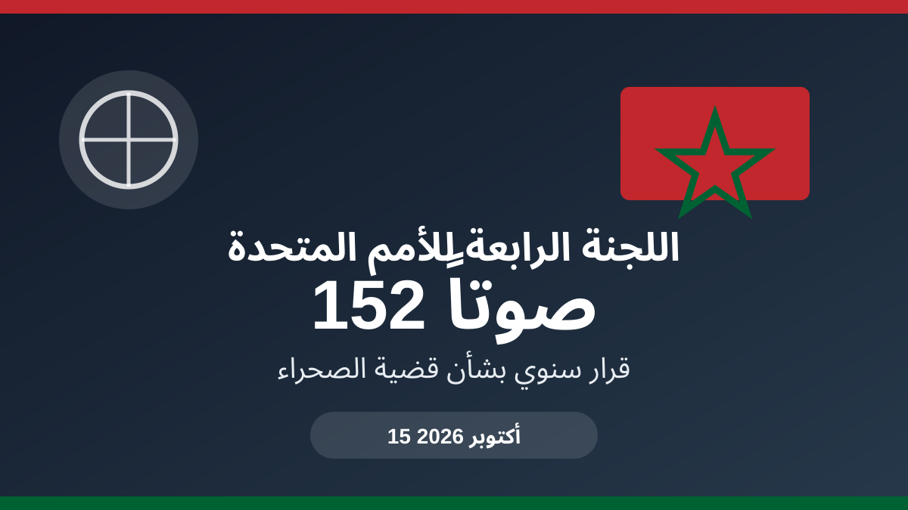

الصحراء المغربية.. اللجنة الرابعة تعتمد القرار بـ152 صوتاً

اعتمدت اللجنة الرابعة للجمعية العامة للأمم المتحدة، يوم الخميس 15 أكتوبر 2026، قرارها السنوي بشأن قضية الصحراء المغربية بـ152 صوتاً لصالح القرار، مقابل صوتين ضد و7 امتناعات عن التصويت، وفق ما أوردته وكالة المغرب العربي للأنباء ونشرته SNRT News.
ويكتسي التصويت أهمية خاصة هذه السنة، بعدما جرى اعتماد النص في السابق عادة دون تصويت، وفق ممارسة توافقية معمول بها منذ سنة 2006. وبحسب SNRT News، جاء إجراء التصويت هذه السنة بناءً على طلب تقدمت به بعثة الولايات المتحدة في آخر لحظة، وشمل مشاريع القرارات الـ23 المعروضة على اللجنة الرابعة.
ويأتي القرار في سياق أممي يتواصل فيه النقاش حول مستقبل قضية الصحراء، مع بقاء العملية السياسية تحت رعاية الأمم المتحدة. كما يبرز القرار رقم 2797 الصادر عن مجلس الأمن كمرجعية أساسية في المسار الحالي، بحسب التغطية المغربية للتصويت.
ومن المهم توضيح أن نتيجة التصويت في اللجنة الرابعة لا تعني بمفردها حسم الوضع النهائي للنزاع، وإنما تمثل خطوة ضمن المسار الأممي والسنوي المتعلق بقضية الصحراء.
وتتجه الأنظار الآن إلى التطورات المقبلة في المسار السياسي الذي ترعاه الأمم المتحدة، وإلى مواقف الأطراف بشأن المفاوضات والحل السياسي.
← العودة إلى الصفحة الرئيسية